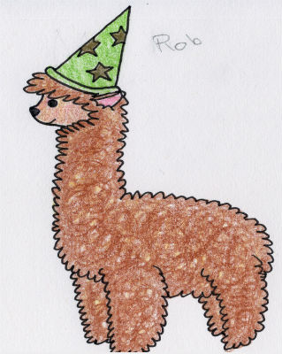

Alpacas With Bonnets
Non stop trip to alpaca salvation
What This Game Is
Alpacas With Bonnets is a 2D side-scrolling platform game. You the player, play as an enraged alpaca who happens to have found a bonnet that gives him or her powers. It is then decided that you need to use this hat to save your species from your vicous masters, the humans. The game starts with you escaping your enclosure and heading towards the city. Each level has coins you can collect and a hat to mark the end of the level.
Where the Game Came From
"Alpacas with Bonnets" was created in my Game Design and Algorithmic Problem Solvings II class the Fall of 2014. We were placed into groups and given about seven weeks to pull the game together. Our group went for a simple concept in hopes that the scope would be small enough that we could produce a really polished product.
Credit given to Sara Nueffer and Zoey McHenry for their helpThe Style of the Game
As stated before the game is a 2D side scroller. We decided on a bright and cartoony feel to the game artwise since we wanted the game to have a comical nature. The levels were built with the use of tiles as well, making the creation of new levels as simple as typing up a quick simple text file and then parsing it through our program so that the game would know which tiles would be appearing where.
